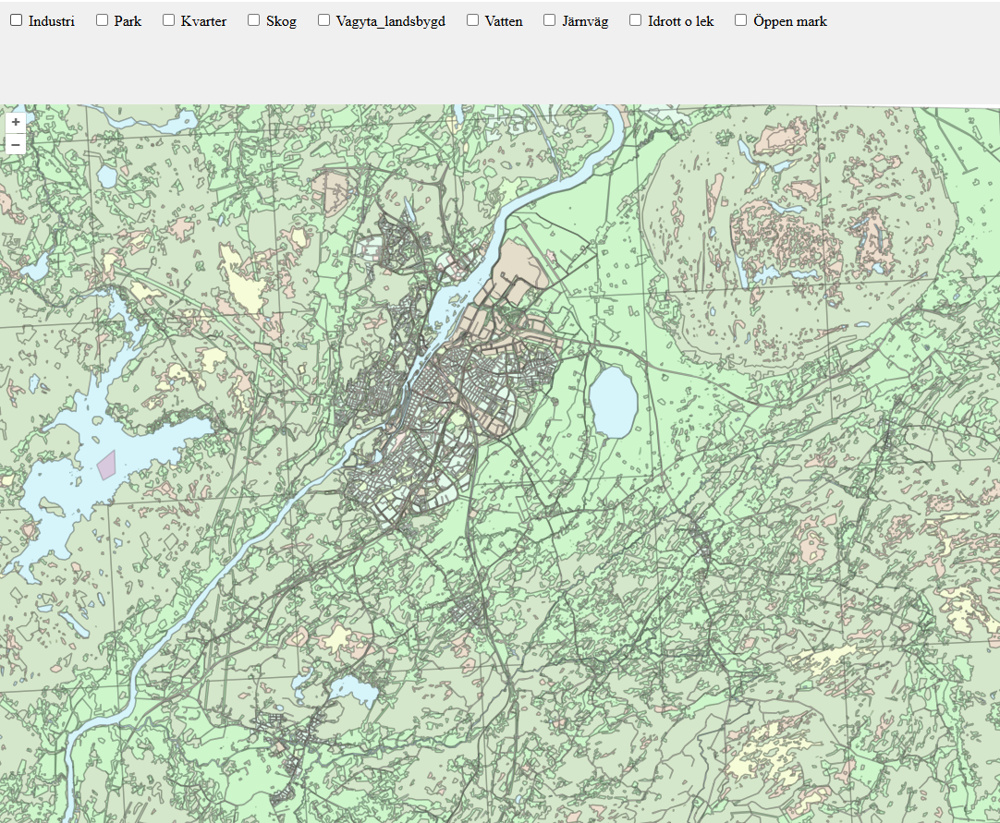

GIS-Portfolio

Data Analyst Portfolio
..........
Min portfolio är indelad i två huvudområden: GIS-projekt och Dataanalys-projekt. Genom att klicka på respektive del kan du utforska detaljerna i varje arbetsflöde, se hur jag hanterar och visualiserar data, samt ta del av interaktiva rapporter och kartlösningar.